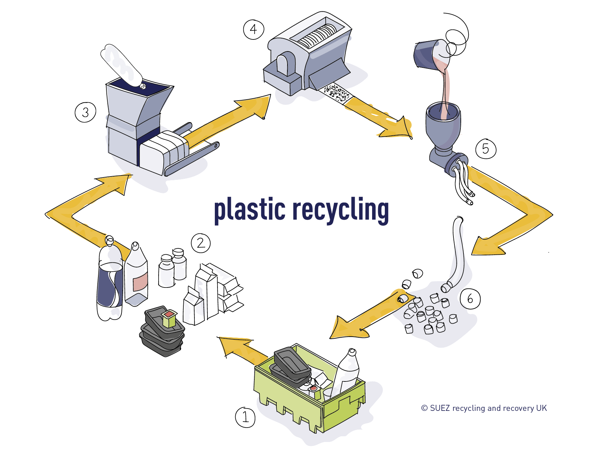

1. Sorting: Collect packaging and caps separately.
2. Cleaning: Remove contaminants.
3. Shredding: Plastic is crushed into granules.
4. Melting: Melt for new products.
5. Recycling: Can be recycled, but quality decreases.

Where do people use it?
PET (Polyethylene Terephthalate): Common in beverage and food containers (like water and soda bottles), textiles (polyester clothing), and packaging (cosmetics, cleaning products). It’s also used in medical packaging and some medical devices.
PVC (Polyvinyl Chloride): Found in plumbing pipes, vinyl flooring, window frames, and medical products (like blood bags). It’s also used for making credit cards and ID cards.
PP (Polypropylene): Used in food containers, packaging, automotive parts (like bumpers), textiles (carpets, activewear), and medical devices (syringes, pill bottles).